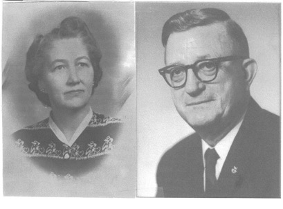
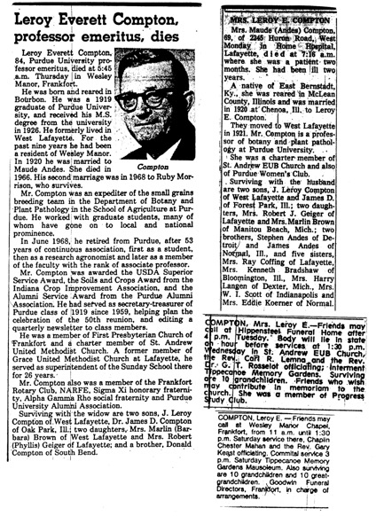

|  |
Maude Compton
October 28, 1896 to September 26, 1966
Relationship to St. Andrew: Both Maude and Roy were Charter Members of St. Andrew. Roy was Vice-chair of the Trustees when ground was broken for the sanctuary and was Sunday School Superintendent. Maude was secretary of the Women’s Society and always active in social events.
Family: Leroy Compton and Maude Andes were married in 1920 at Chenoa, IL. They had two sons, J. Leroy and James D., and two daughters, Barbara Brown and Phyllis Geiger. They have ten grandchildren and ten great-grandchildren.
Recognitions: Mr. Compton was a leader of a team of scientists which released many small grains varieties that dominated the soft red winter wheat areas. A wheat variety was named in his honor. Mrs. Compton was a homemaker and active in the Purdue Women’s Club in addition to her Church.
Memorials: The divider curtains in Fellowship Hall were purchased in honor of Maude Compton and a special gift was donated to a Kentucky mission by the Women’s Society in her memory.
